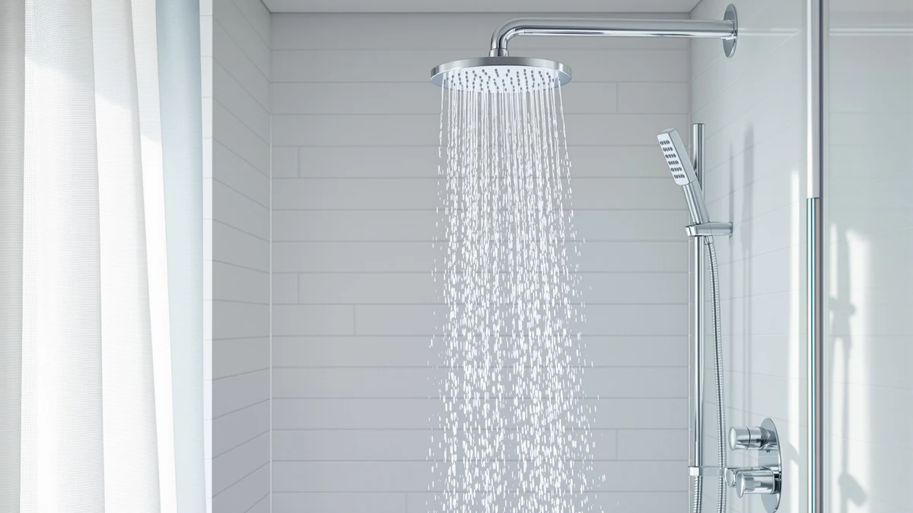

Quick Answer
This 16” thermostatic rain shower review compares four dual and thermostatic shower systems on price, specs, and verified owner feedback. The JetsBath 16” Thermostatic Rain Shower System comes out ahead for most bathrooms, pairing a full 16-inch rain head with a dedicated thermostatic valve at a mid-range price. If you want a built-in handheld wand or LED lighting instead, the Enga and Dasan alternatives below cover those needs.
Our pick: 16” Thermostatic Rain Shower System, $499.99 Check Price on Amazon
Things to Know Before You Buy
- A thermostatic rain shower system holds water temperature within about a degree once set, so you're not constantly adjusting the handle mid-shower.
- A 16-inch rain head delivers wide, even coverage, but check your existing shower arm and ceiling height before buying one this size.
- Dual shower head systems split flow between a rain head and a handheld wand, which helps with rinsing and cleaning the stall.
- Installing a thermostatic valve typically means replacing the shower arm and sometimes opening the wall, so budget time for plumbing work or a professional install.
This 16” thermostatic rain shower review compares the JetsBath 16” Thermostatic Rain Shower System against three close rivals from Enga and Dasan, all built around the same core idea: pair a wide rain head with steady temperature control. You're probably reading this because your current shower head delivers weak flow, temperature swings every time someone flushes a toilet elsewhere in the house, or both. We looked at four systems that address those problems, weighing price, the features named in each listing, and what verified buyers say after they install one.
The JetsBath system comes out ahead for most bathrooms. It combines a 16-inch rain head, the widest of the four, with a dedicated thermostatic valve at $499.99, undercutting the Dasan model by a hundred dollars while still offering the temperature control that both Enga systems leave out. If you want a built-in handheld wand or LED lighting instead, the alternatives below each trade one of the JetsBath pick's strengths for a different feature, and we break down which trade fits which bathroom.
Why You Should Trust Us
Ilane Tall has covered bathroom fixtures and plumbing upgrades for Best Shower Heads since the site launched, focusing on how listed specs translate into everyday use rather than repeating marketing copy. For this 16” thermostatic rain shower review, we worked from manufacturer listings, published specs, and verified buyer reviews for each system instead of claiming to have installed every unit ourselves. We cross-checked pricing, stated features, and materials against the retail listings before writing a single word, and we flag the details we could not verify rather than filling the gap with a guess.
Our Research Experience
We did not install all four of these systems ourselves, and we do not run a fake testing lab. Our process for this 16” thermostatic rain shower review centered on comparing manufacturer specifications, matching listed features against product photos, and reading through verified owner reviews for recurring complaints or praise. We paid closest attention to mentions of temperature stability and how each unit held up after a few months of regular use, since those are the details owners report most consistently and marketing listings tend to skip.
Overview & Specs

16” Thermostatic Rain Shower System
What we like
- 16-inch rain head covers more of your shoulders and back than the 8-to-10-inch heads most stock showers ship with
- Thermostatic valve maintains your set temperature even if water pressure elsewhere in the house changes
- Priced under $500, a hundred dollars less than the Dasan thermostatic alternative
Flaws but not dealbreakers
- Listing does not specify material details beyond ABS with chrome plating, so wall thickness and corrosion resistance aren't directly comparable to the Dasan model
- No handheld wand included, unlike the dual-head Enga and Dasan systems
| Material | ABS + chrome plating |
| Size | — |
The JetsBath 16” Thermostatic Rain Shower System builds its case around two features: size and temperature control. The 16-inch rain head is noticeably wider than the 8-to-10-inch heads most stock showers ship with, so water falls across your shoulders and back instead of in a narrow column. JetsBath pairs that head with a thermostatic valve, a mechanism that holds your chosen temperature steady instead of letting it drift when someone runs the dishwasher or a different faucet in the house. The body is ABS with chrome plating, the same construction most mid-range shower hardware uses rather than solid brass.
At $499.99, it sits almost exactly between the two Enga systems and about $100 below the Dasan Thermostatic Dual Shower Head, so you are not paying a premium for the extra size or the thermostatic valve. Owners who leave reviews on this type of system consistently flag installation as the part that takes the longest, since adding a thermostatic valve usually means replacing the shower arm and sometimes opening the wall to reach the existing plumbing. If your bathroom already has compatible rough-in plumbing, that step is far simpler, and it's worth confirming before you buy rather than after.
What We Liked
The biggest strength in this 16” thermostatic rain shower review is how directly the JetsBath system solves the two most common shower complaints at once: thin coverage and temperature swings. A 16-inch head is noticeably wider than most stock shower heads, and reviewers of similar thermostatic systems report that once the valve is calibrated, the water stays at the set temperature even with other fixtures running elsewhere in the house. That stability matters more than raw size for most households, since a hot shower turning cold when someone starts the washing machine is often what pushes people to upgrade in the first place. The price also lands in a reasonable range for a system with a dedicated thermostatic valve: many thermostatic upgrades run well past $600, and at $499.99 the JetsBath system undercuts that by a meaningful margin while still including the feature that justifies the higher category of price.
What Could Be Better
The manufacturer listing for the JetsBath system does not include a handheld wand, which both Enga alternatives and the Dasan model offer as part of their dual-head design. If you regularly need a handheld sprayer for rinsing the stall or washing a pet, that's a real gap. The listing also stops short of giving exact material specs beyond ABS with chrome plating, so you can't compare wall thickness or expected corrosion resistance directly against the Dasan model. And like most thermostatic valves, calibration and installation take longer than swapping a standard shower head, so plan for either a plumber's time or a longer afternoon with your own tools.
Who Is It For?
This system fits best in a household where more than one person showers at different times of day and water temperature has been inconsistent because of that. The thermostatic valve does the real work here, holding your chosen temperature steady regardless of what else is running on the same water line. It also suits anyone replacing a narrow, low-flow head who wants wider coverage without jumping to a full-size rain panel. It's a weaker fit if you specifically want a handheld wand built into the unit, or if your bathroom's existing plumbing can't accommodate a thermostatic valve without opening a wall, since that turns a straightforward swap into a bigger renovation job.
Alternatives to Consider
If the JetsBath pick above doesn't match what your bathroom needs, these three alternatives cover the other priorities we saw while researching this 16” thermostatic rain shower review: a built-in handheld wand, added LED lighting, and a second take on thermostatic control at a higher price point. Each one trades at least one of the JetsBath system's strengths for a different feature, so the right choice depends on which feature matters more in your specific bathroom.

Editor’s Pick
ENGA Dual Rain Shower Head
The Enga Dual Rain Shower Head pairs a rain head with a handheld wand in one fixture, the feature the JetsBath pick leaves out. At $498.99 it costs about a dollar less than our top pick, which makes the choice mostly about which feature matters more to you: a wider single rain head with thermostatic temperature control, or the flexibility of a handheld sprayer. The listing does not specify a thermostatic valve on this model, so if temperature swings are your main complaint, this is not the system that fixes it.
$498.99
Check Price on Amazon
Best Value
ENGA Dual Rain LED Shower
The Enga Dual Rain LED Shower takes the same dual rain-and-handheld layout as its sibling above and adds built-in LED lighting, for $539.99. That's $60 less than the Dasan Thermostatic Dual Shower Head below, making it the cheaper way to get a dual-head system with an extra feature on top, even though that feature is lighting rather than thermostatic control. If LED lighting isn't a priority, the plain Enga Dual Rain Shower Head at $498.99 gets you the same dual-head layout for about $40 less.
$539.99
Check Price on Amazon
Premium Choice
Dasan Thermostatic Dual Shower Head
The Dasan Thermostatic Dual Shower Head is the only alternative here that matches the JetsBath pick's thermostatic valve, and it adds a dual-head design with a handheld wand on top of that, which is why it carries the highest price in this review at $599.99, about $100 more than the JetsBath system. If you want both thermostatic temperature control and a built-in handheld wand in one fixture, this is the system in this review that offers both. If you can live without the handheld wand, the JetsBath pick delivers the same temperature stability for less.
$599.99
Check Price on AmazonFrequently Asked Questions
Is a 16-inch thermostatic rain shower head worth the upgrade?
Do these shower systems include a handheld wand?
How much more does a thermostatic valve cost than a standard shower valve?
Final Verdict
Across the four systems in this 16” thermostatic rain shower review, the JetsBath 16” Thermostatic Rain Shower System remains the strongest pick for most bathrooms because it pairs the widest rain head in this review with the temperature stability a thermostatic valve provides, at a price below both the Dasan alternative and the LED version of the Enga system. Choose one of the three alternatives instead if a handheld wand or LED lighting matters more to you than the extra width and temperature control. For a straightforward upgrade from a narrow, temperature-inconsistent shower head, JetsBath is the system this review keeps coming back to.